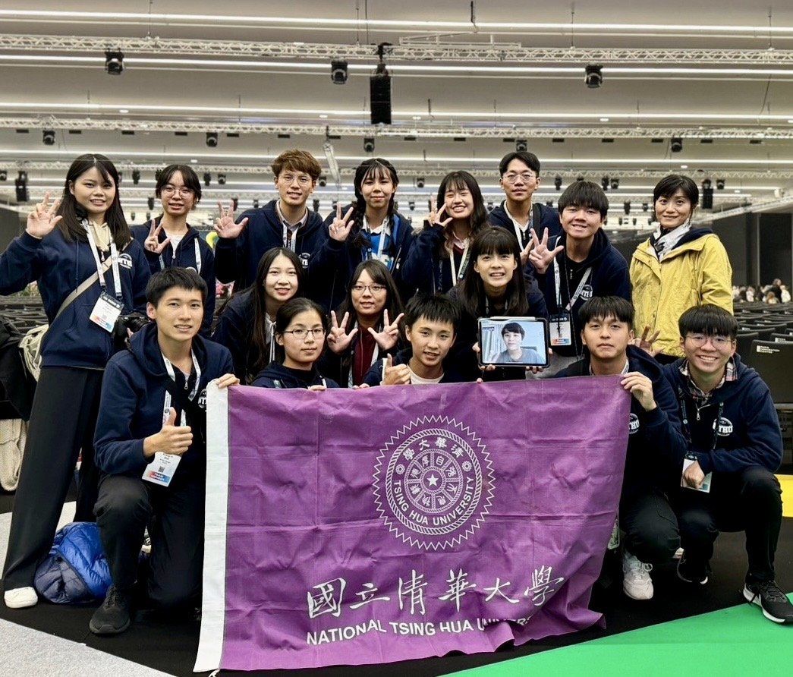
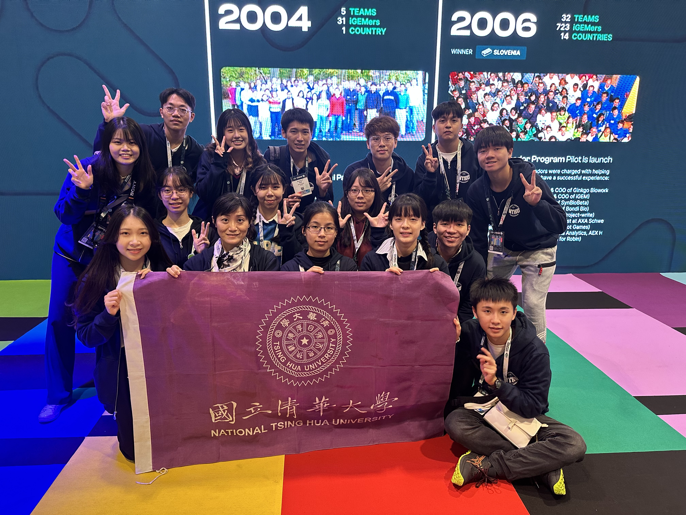
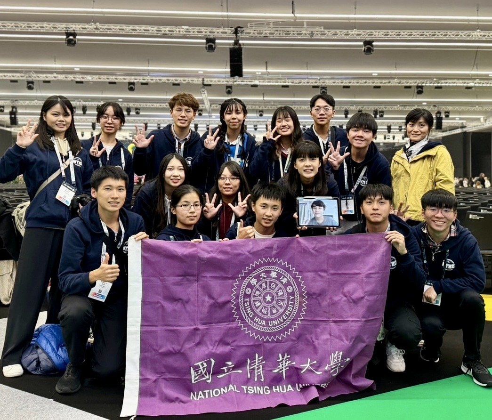
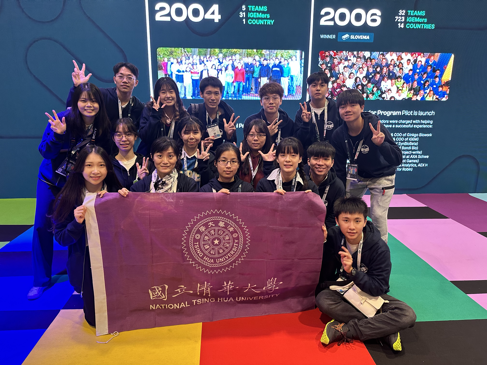

NTHU · Physics × EECS (AI Track) · CV / ML / Generative AI
Hi, I’m Arthur (Chi-Wei Lee).
I build computer vision & generative models.
Senior at National Tsing Hua University (NTHU), majoring in Physics and the Interdisciplinary Program of EECS (AI Track). Currently a part-time research assistant at Academia Sinica CITI, working on diffusion-model-driven dynamic aesthetic QR codes that balance visual appeal and scannability. With international competition experience and cross-domain hardware–software integration, I’m focused on deepening my research in CV / Generative AI and collaborating globally. Outside research, I do trail runnings and ultramarathons—my longest is Taiwan’s Formosa Trail (75 km / 4100 m ascent). The background photo is from that run.
About
I’m Arthur (Chi-Wei Lee), double majoring in Physics and the Interdisciplinary Program of EECS (AI Track) at National Tsing Hua University. My research interests focus on Computer Vision, Machine Learning, and Generative AI—especially probabilistic modeling, uncertainty-aware control, and robustness under distribution shift. I’m currently a part-time Research Assistant at Academia Sinica CITI, leading a diffusion-based dynamic QR code generation project (aesthetic optimization + scan reliability).
I’m good at turning “research ideas → runnable systems → demo-ready results” quickly. I led a 6-person team to win 2nd place overall in the NSF HDR ML Challenge (600+ teams) and presented at an AAAI-25 Workshop in Philadelphia. I also served as Dry Lab leader for iGEM 2023 (Gold Medal), and I enjoy building end-to-end systems that combine modeling, evaluation, and (when needed) hardware.
Quick Facts
- School: National Tsing Hua University
- Major: Physics & EECS (AI Track)
- Current: Academia Sinica CITI · Part-time RA
- Interest: Diffusion, uncertainty & robustness, medical imaging
Research & Experience
Timeline
NSF HDR ML Challenge 2026 — Climate Prediction Track
3rd place (Taiwan region) · continuing global participation
- Built attention-based deep learning models with specialized preprocessing for drought prediction from beetle images.
- Focused on improving out-of-distribution generalization under real-world distribution shift.
NTHU — Teaching Assistant, Introduction to Machine Learning
Sep 2025 – Dec 2025 · One semester
- Assisted with course logistics, problem sessions, and Q&A.
- Supported students with conceptual understanding and implementation issues.
TAAI 2025 — Poster (Accepted): MatrixQR
Extended abstract (not a full paper) · Full paper in preparation
Academia Sinica · CITI — Part-time Research Assistant (Team Lead)
Jul 2025 – Present · Diffusion-based dynamic aesthetic QR codes
- Led a small team building a diffusion-based pipeline for dynamic aesthetic QR code generation.
- Worked on controllable trade-offs between visual quality and scan reliability under heterogeneous uncertainty.
- Explored uncertainty-aware guidance ideas inspired by recent work on denoiser covariance estimation.
Mei-Chu Hackathon 2025 (Maker Track) — 1st Place
Wearable + mobile app · Healthcare trajectory modeling
- Integrated a wearable watch and a mobile app to capture and analyze walking trajectories.
- Modeled dementia patients’ movement patterns for safety monitoring and alerts.
2025 U.S. NSF HDR ML Challenge — Overall 2nd Place Worldwide
Dec 2024 – Feb 2025 · Invited talk at AAAI-25 Workshop (Philadelphia)
Gallery
Long read
- Led a 6-member team (“20iterations”) across multiple anomaly-detection tasks (gravitational waves, hybrid butterflies, sea level).
- Developed and iterated on autoencoder and generative approaches; designed ablations and adapted to domain shifts under online evaluation.
- Ranked 2nd overall among 600+ teams worldwide; invited to present at an AAAI-25 Workshop in Philadelphia.

Journal of Modern Physics (2024) — Michelson Interferometer Vibration Classification
Machine learning for physical experimental signal analysis
- Co-authored a peer-reviewed journal paper; revised and polished academic English across the manuscript.
- Helped write and refine physics-related theoretical sections for clarity and consistency.
iGEM 2023 (NTHU-Taiwan) — Gold Medal
Dec 2022 – Nov 2023 · Paris, France · Dry Lab leader + hardware integration
Gallery
Long read
- Dry Lab leader; built an automated identification system for colorectal cancer screening reagents using machine learning.
- Led digital circuit design and Arduino-based hardware–software integration for automated temperature control, cooling, and precise reagent dispensing.
- Presented and demonstrated the system in Paris; received Gold Medal.

 



Projects
Controllable generation balancing aesthetics and scanning robustness.
Comparing Xception & DenseNet121 on different demographics; robustness & generalization.
Multi-track anomaly detection solutions and experiments (gravitational waves, hybrid butterflies, sea level).